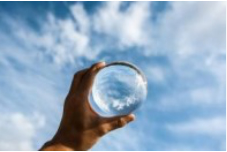

<ion-view view-title="资讯" class="nav-title">
	<ion-nav-bar>
		<ion-nav-buttons side="left">
			<button class="button button-icon" ng-click="goback()">
			<i class="ion-ios-arrow-left nav-title" style="font-size: 30px;"></i>
		</button>
		</ion-nav-buttons>
	</ion-nav-bar>
	<ion-content style="background-color: #F8F8F8;">
		<div style="position: sticky;top: 0;width: 100%;height: 1px;background-color: #F2F2F2;;"></div>
		<!--<ion-item ng-repeat="item in items" class="home-item" style="height: 116px;" on-tap="gotodetails($index)">
			<a class="item-thumbnail-right">
				
				
				<div class="new-title item-text-wrap">
					<p class="news-main-title">{{item.title}}</p>
				</div>
				<p class="news-title">{{item.mainAuthor}}</p>
			</a>
		</ion-item>-->
		<div class="home-news-item" ng-repeat="item in items" ng-click = "gotodetails($index)">
				<div class="home-news-text">
					<p class="home-news-title">{{item.title}}</p>
					<p class="home-news-auther" >{{item.mainAuthor}}</p>
				</div>
				
				
			</div>
	</ion-content>
</ion-view>